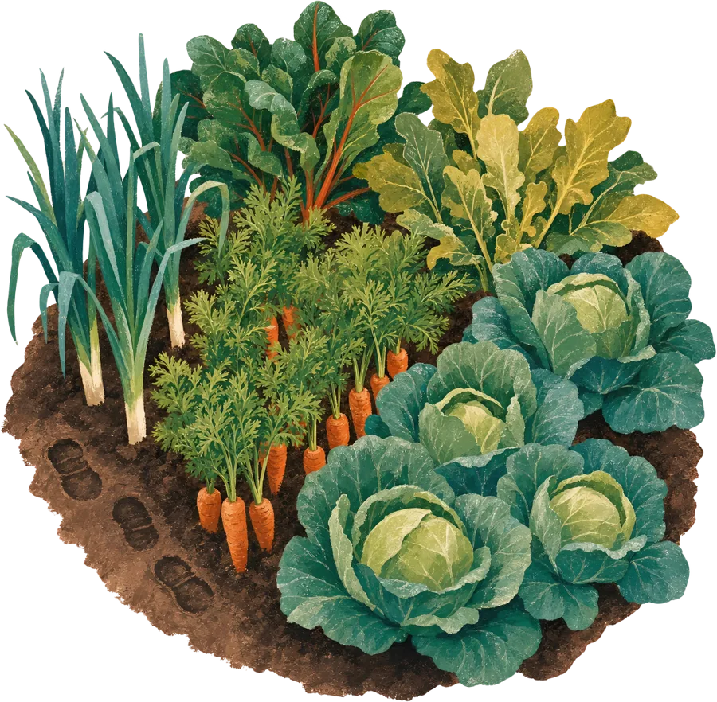
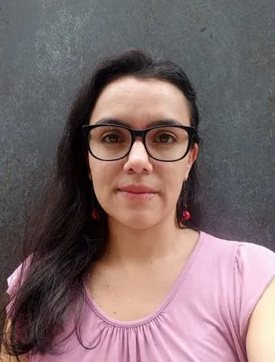
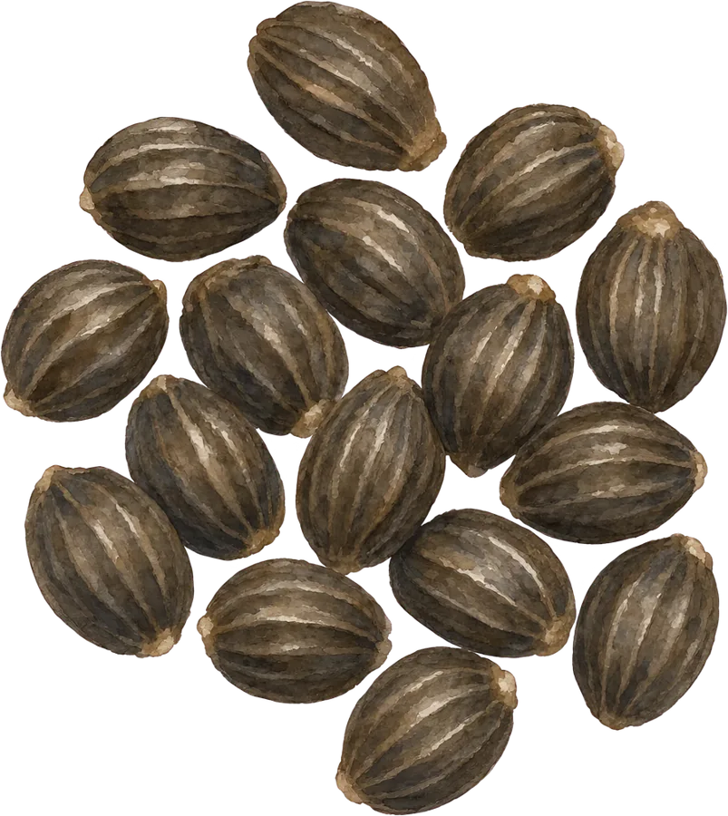
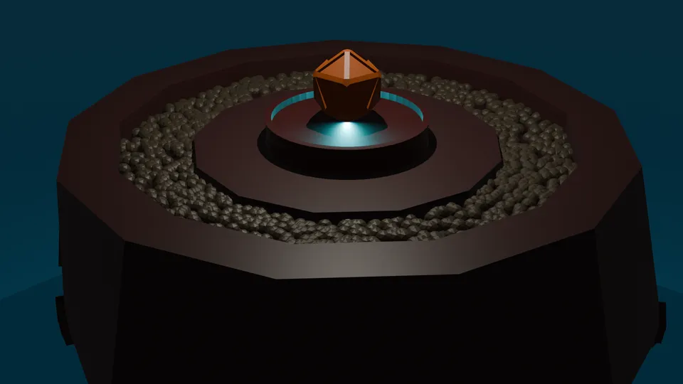
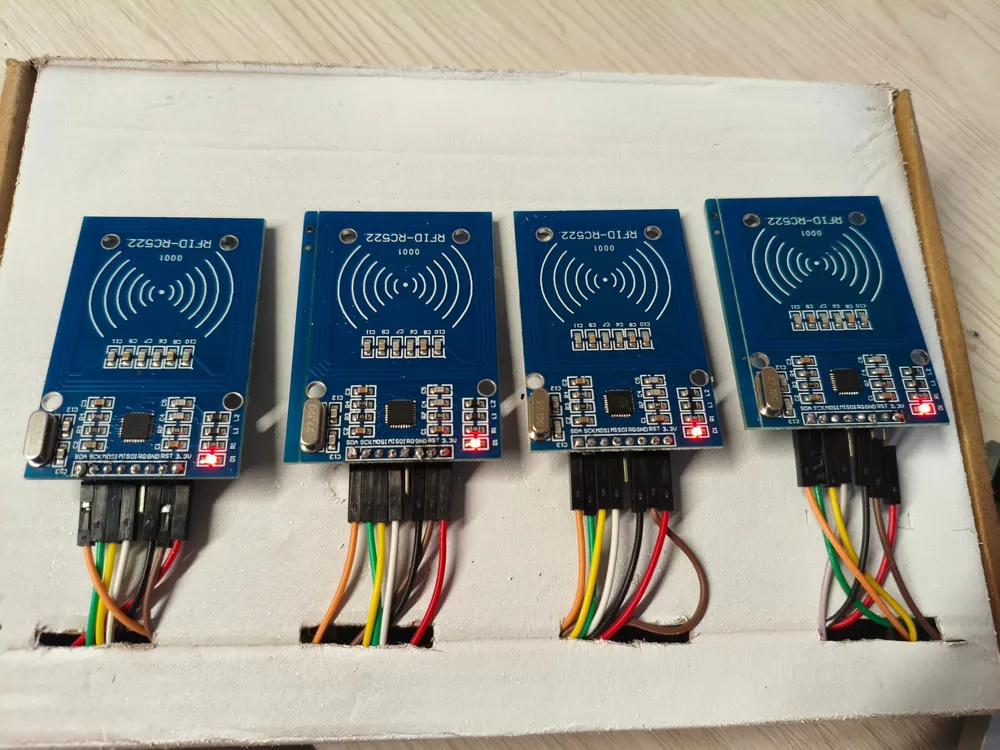
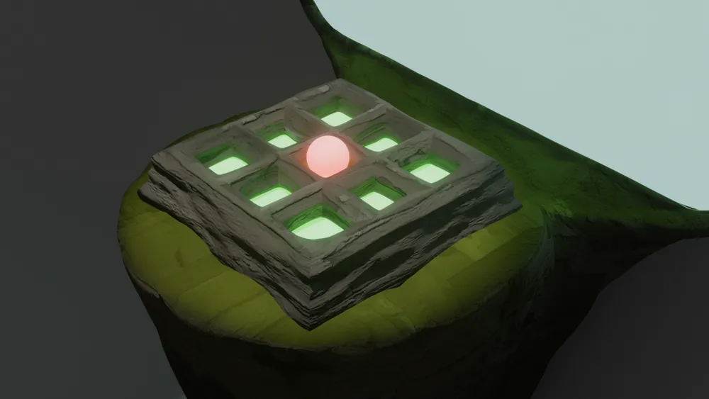

Repositorio vivo de semillas nativas
El almácigo
Acerca una semilla y descubre la planta que lleva dentro: cómo se siembra, cómo se cuida y para qué sirve. Un prototipo de surReal Studio.
SemillaMemoriaRaízSaber
Sobre el problema
Semillas en riesgo
Cada semilla nativa guarda siglos de adaptación y saber campesino.
Cuando una variedad deja de sembrarse, se pierde para siempre, y con ella el conocimiento para cultivarla.
¿Quién decide qué sembramos y qué comemos?
- Comunidades que dejan sus semillas y dependen de comprarlas en cada cosecha.
- Semillas híbridas que no se pueden volver a sembrar con los mismos resultados.
- Más dependencia de fertilizantes y agroquímicos.

de las semillas del mundo está en manos de cuatro empresas. Bayer, Syngenta, Corteva y BASF controlan además el 61 % del mercado de pesticidas.
Fuente: ETC Group
El caso colombiano
La Resolución 970
-
2010
Funcionarios del ICA destruyen 62 toneladas de arroz en el Huila, en cumplimiento de la norma.
La Silla Vacía
-
2013
El paro agrario exige que no se autorice la propiedad intelectual sobre las semillas.
Universidad de los Andes
-
2015
La Resolución 3168 deroga la 970, pero el debate sigue abierto.
Universidad del Rosario

Es muy difícil mostrarle a una persona que probablemente nunca ha visto la flor de la zanahoria cómo es precisamente la flor, pues seguramente no la tenemos disponible en la huerta.
Qué es
Un repositorio vivo
El almácigo reúne modelos 3D de las plantas que resguardan los custodios, para que se puedan ver en cualquier época del año, aunque no estén en la huerta.
- HoyUn prototipo inicial: una pieza artística y de divulgación que hace visible este saber.
- MañanaUna herramienta en manos de los custodios, que ellos mismos siguen alimentando con modelos e información.
- PropósitoFacilitar que los saberes sobre semillas nativas y criollas pasen a las nuevas generaciones.

El espejo de las plantas
La interfaz
En la exposición, cada semilla lleva una etiqueta. Al ponerla sobre un lector, aparece su planta en 3D junto con su semilla, su flor y lo necesario para sembrarla.
Pruébala aquí: elige una planta.
También puedes usar las teclas 1 a 4 dentro del espejo, y 0 para volver al inicio.
Las semillas del repositorio
Las plantas
Cuatro semillas, cuatro lectores. Cada planta tiene su propio color en la interfaz.
La semilla estrella
Sacha inchi y la transformación social
En el Guaviare y el sur del Meta, esta semilla amazónica se ha vuelto una alternativa para dejar atrás los cultivos ilícitos y la ganadería extensiva, sin tumbar la selva.
-
Sustitución de cultivos
Empieza a producir a los pocos meses y se vende todo el año. Para muchas familias campesinas es una forma concreta de cambiar la coca por otro sustento.
-
Cuidado del bosque
Se siembra en arreglos agroforestales, junto a árboles como el abarco, el cacay y el copoazú, como parte de la lucha contra la deforestación.
-
Se aprovecha toda la planta
Su aceite tiene omega 3, 6 y 9 y vitamina E. Con las hojas se hace té, con la cáscara bioabono, y con lo que queda tras extraer el aceite se hornean galletas, tortas y arepas.
Asoproagro, en el Guaviare
Asociación nacida en 2010 para buscar alternativas de producción sostenible e impulsar la sustitución voluntaria de cultivos ilícitos.
“El Sacha Inchi no es el fin, sino un medio.”
Fuente: Instituto SINCHI, “Sacha Inchi: la semilla estrella que transforma la Amazonia”, 21 de marzo de 2023.
Entre la tierra y el circuito
Antes y después
Primero
Una experiencia en TouchDesigner
El almácigo nació como una pieza performativa, con visuales y sonido en tiempo real. Funcionaba, pero montarlo y modificarlo exigía conocimientos técnicos que pocos tienen.
Ahora
Una página web
Se abre en el navegador y se conecta directo al Arduino. Así los custodios pueden replicar el proyecto y sumar sus propias plantas con su modelo 3D, sus imágenes y sus textos.
La idea es que sea fácil de hacer: que el repositorio crezca en manos de quienes guardan las semillas.
-
1

Acerca una semilla
Cada semilla va con una etiqueta RFID y se pone sobre uno de los cuatro lectores.
-
2

El lector la reconoce
Los lectores RC522 están conectados a un Arduino Mega, que envía a la página web el número de la planta.
-
3

La planta aparece
La página muestra el modelo 3D de la planta, su semilla, su flor, su cuidado y sus usos.
Hecho con
- Arduino Mega
- RFID RC522
- HTML y JavaScript
- Modelos 3D
- Web Serial

Quién siembra este repositorio
El estudio
surReal Studio
Estudio de diseño y experiencias interactivas
En surReal Studio queremos que el saber de los custodios de semillas llegue a las nuevas generaciones, uniendo modelos 3D, electrónica y visuales interactivas en una sola pieza.
Lo que presentamos aquí es el primer paso hacia el repositorio vivo que aspiramos a construir: uno que crezca con más plantas y más saberes, y que los custodios puedan seguir alimentando con sus propias manos.